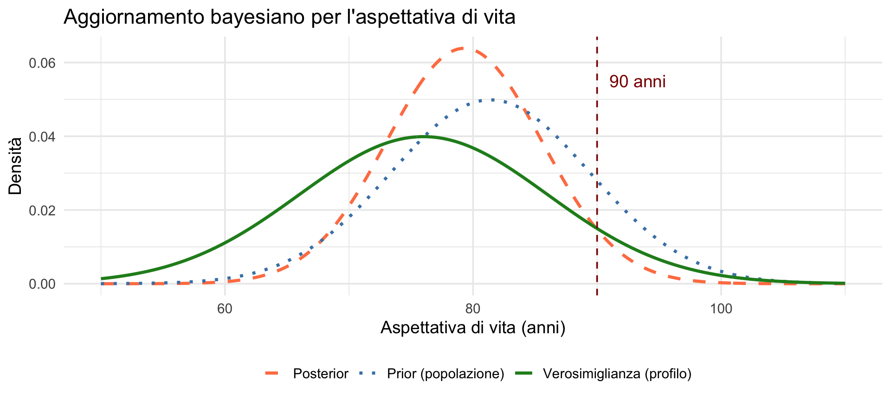
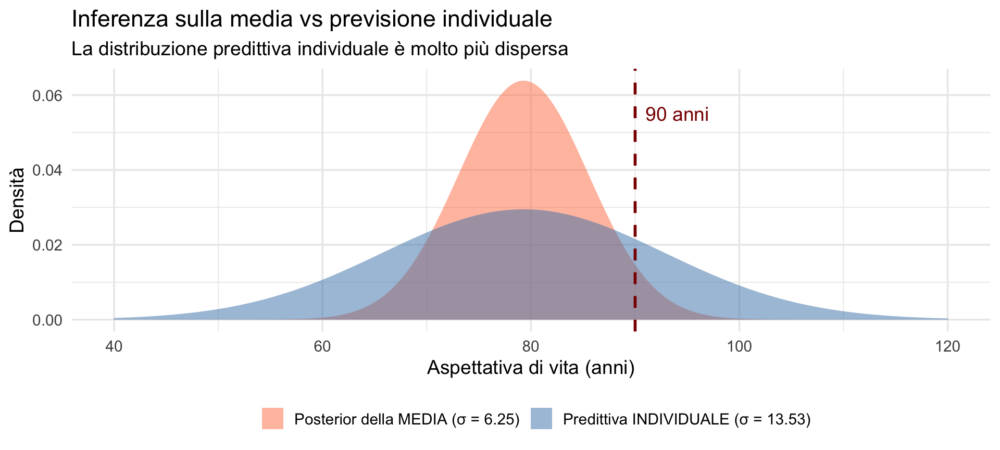
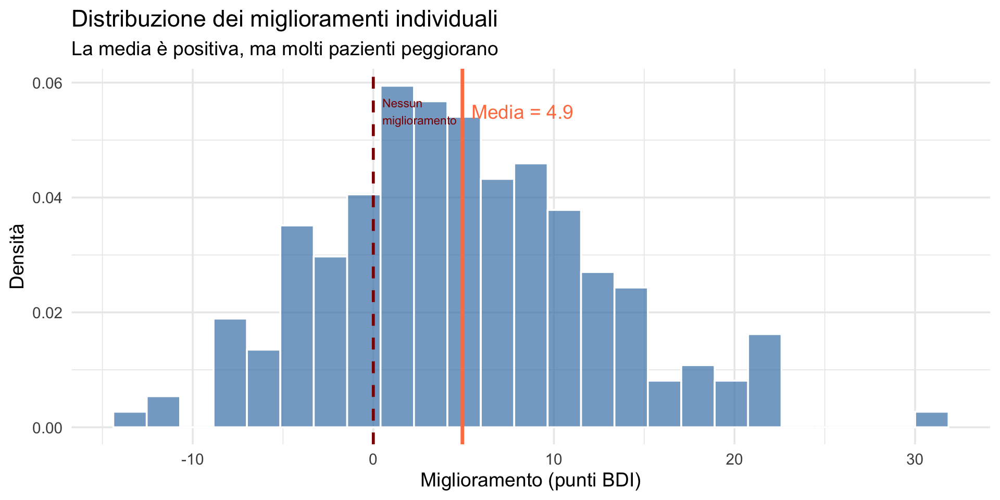

Inferenza bayesiana su una media
Dal gruppo all’individuo — Segmento 2
![]()
16 febbraio 2026
Obiettivi
- Comprendere il modello normale-normale per stimare una media.
- Distinguere tra inferenza sulla media e previsione individuale.
- Calcolare la distribuzione predittiva per un singolo caso.
- Capire perché l’approccio nomotetico è problematico in psicologia.
- Riconoscere che il test t risponde alla domanda sbagliata.
Parte 1: il modello normale-normale
Ricapitolando
Nel segmento precedente abbiamo visto come stimare una media con brms, confrontando modello normale e modello robusto (\(t\) di Student).
Ora approfondiamo il modello normale-normale: il caso più semplice di inferenza bayesiana su una media. Si tratta della stessa famiglia coniugata che abbiamo studiato nella Lezione 19.
Il modello in parole semplici
Abbiamo tre ingredienti — gli stessi della Lezione 17:
prior: ciò che crediamo sulla media prima di osservare i dati;
verosimiglianza: come i dati dipendono dalla media;
posterior: ciò che crediamo sulla media dopo aver osservato i dati.
La peculiarità del caso normale-normale: tutte e tre sono distribuzioni normali.
Le formule
Posterior per la media:
\[ \mu_{\text{post}} = \frac{\frac{\mu_0}{\sigma_0^2} + \frac{y_{\text{obs}}}{\sigma_{\text{obs}}^2}}{\frac{1}{\sigma_0^2} + \frac{1}{\sigma_{\text{obs}}^2}}. \]
\[ \sigma_{\text{post}}^2 = \frac{1}{\frac{1}{\sigma_0^2} + \frac{1}{\sigma_{\text{obs}}^2}}. \]
L’intuizione importante
La posterior è una media pesata tra prior e dati — lo stesso principio che abbiamo visto nella Lezione 19 per il caso Beta-Binomiale.
Chi è più “preciso” (ovvero, ha varianza minore) conta di più.
Parte 2: un esempio concreto
La domanda
Immaginiamo questa situazione:
“Consideriamo una persona sedentaria, sovrappeso, con un’alimentazione non ottimale. Qual è la probabilità che viva più di 90 anni?”
Questa domanda può essere affrontata in due modi molto diversi:
- calcolare la probabilità che la media della sua categoria sia > 90;
- calcolare la probabilità che quella specifica persona viva > 90.
I dati a disposizione
Prior (popolazione maschile italiana):
- aspettativa di vita media: \(\mu_0 = 81.4\) anni;
- incertezza (DS): \(\sigma_0 = 8\) anni.
Informazione specifica (profilo di rischio):
- stima per un profilo simile: \(y_{\text{obs}} = 76\) anni;
- incertezza di questa stima: \(\sigma_{\text{obs}} = 10\) anni.
Perché non usare solo la distribuzione del gruppo specifico?
Una domanda naturale è:
“Se per questo profilo la stima è 76 anni (DS = 10), perché non usare direttamente quella distribuzione?”
Perché 76 ± 10 non è una verità certa. È una stima con incertezza, ottenuta da dati limitati.
Il problema del campione piccolo
La stima “76 anni”:
- potrebbe provenire da uno studio con pochi soggetti;
- potrebbe essere influenzata dal caso;
- potrebbe sovrastimare o sottostimare il vero valore.
Se ignoriamo il prior della popolazione:
- trattiamo 76 come se fosse perfettamente affidabile;
- perdiamo informazione già disponibile (81.4 anni nella popolazione generale).
L’idea bayesiana: non buttiamo via informazioni
Abbiamo due fonti di informazione:
- ciò che sappiamo sulla popolazione generale (81.4 ± 8);
- ciò che osserviamo per questo profilo specifico (76 ± 10).
Il principio bayesiano è:
Non scegliere tra le due informazioni. Combinale, pesandole per la loro precisione.
Intuizione: shrinkage
Quando il dato specifico è incerto (DS = 10):
- la posterior si sposta verso la media della popolazione;
- ma non ignora le informazioni del profilo specifico.
Questo fenomeno si chiama:
shrinkage.
La stima estrema (76) viene “attirata” verso 81.4 perché riconosciamo che potrebbe essere rumorosa.
Cosa succederebbe senza prior?
Se usassimo solo la distribuzione del profilo:
\[ \mu \sim \text{Normale}(76, 10) \]
staremmo implicitamente assumendo che:
- la popolazione generale non esista,
- oppure non sia informativa,
- oppure che la stima 76 sia perfettamente affidabile.
Ma nessuna di queste ipotesi è realistica.
Messaggio chiave
Usare solo il gruppo specifico equivale a ignorare conoscenza già disponibile.
Usare solo la popolazione generale equivale a ignorare l’informazione specifica.
La soluzione razionale è:
Combinare le due fonti in modo proporzionale alla loro precisione.
Calcoliamo la varianza della posterior
Precisione del prior: 0.0156 Precisione dei dati: 0.01 La precisione è l’inverso della varianza: maggiore è la precisione, minore è l’incertezza.
Calcoliamo ora la varianza posterior:
Precisione totale: 0.0256 Varianza posterior: 39.02 DS posterior: 6.25 anniIntuizione: combinando due fonti di informazione diventiamo più precisi (la DS diminuisce).
Calcoliamo la media della posterior
Cosa è successo?
- Il prior indica: “In media 81.4 anni”.
- I dati indicano: “Per questo profilo, circa 76 anni”.
- La posterior indica: “Combinando le due informazioni, circa 79.3 anni”.
La posterior si colloca tra i due valori, più vicina a quello più preciso.
Riepilogo: la posterior per la media
POSTERIOR PER LA MEDIA μ: μ_post = 79.29 anni σ_post = 6.25 anniIn termini formali:
\[ \mu \mid \text{dati} \sim \text{Normale}(\mu_{\text{post}}, \ \sigma_{\text{post}}). \]
La nostra incertezza sulla media del gruppo è rappresentata da questa distribuzione.
Visualizziamo prior e posterior

Probabilità che la media sia > 90 anni
Calcoliamo la probabilità che la media della distribuzione a posteriori superi 90:
P(μ > 90) = 4.33 %Interpretazione:
La probabilità che l’aspettativa di vita media per persone con questo profilo superi i 90 anni è molto bassa: circa il 4%.
Intervallo di credibilità per la media
Intervallo di credibilità 95% per μ: [ 67 , 91.5 ] anniCome abbiamo imparato nella Lezione 20, questo intervallo ha un’interpretazione diretta: c’è il 95% di probabilità che la media vera si collochi in questo range.
Parte 3: cosa succede all’individuo?
La domanda cruciale
Finora abbiamo ragionato sulla media del gruppo.
Ma la persona vuole sapere:
“Io vivrò più di 90 anni?”
Si tratta di una domanda completamente diversa — ed è qui che la distribuzione predittiva della Lezione 23 diventa fondamentale.
Due domande, due variabili diverse
Domanda 1: sulla media del gruppo
Variabile: μ = vera aspettativa di vita media per quel profilo.
Dopo l’aggiornamento bayesiano abbiamo: \[ \mu \mid \text{dati} \sim \text{Normale}(\mu_{\text{post}}, \sigma_{\text{post}}). \]
È quindi naturale calcolare: \(P(\mu > 90 \mid \text{dati})\).
Domanda 2: sulla singola persona
Variabile: \(X\) = età alla morte di quella specifica persona.
Anche conoscendo esattamente l’aspettativa di vita media \(\mu\), le persone non vivono tutte la stessa età.
Esiste una variabilità individuale dovuta a genetica, eventi casuali, stato di salute, accesso alle cure, fortuna.
La domanda diventa quindi:
\[ P(X > 90 \mid \text{dati}). \]
Attenzione: \(X\) non è la media \(\mu\).
- \(\mu\) = centro del gruppo;
- \(X\) = una vita reale, con molta dispersione.
Il modello a due livelli
Per collegare media e individuo, dobbiamo ragionare su due livelli distinti — la stessa struttura che abbiamo visto nella Lezione 22 (prior predictive) e nella Lezione 23 (posterior predictive).
Livello 1: incertezza sulla media
Non conosciamo esattamente il valore della media. Dopo aver osservato i dati: \[ \mu \mid \text{dati} \sim \text{Normale}(\mu_{\text{post}}, \ \sigma_{\text{post}}). \]
Livello 2: variabilità tra individui
Anche fissato un certo valore di μ, le persone variano enormemente attorno a quella media: \[ X \mid \mu \sim \text{Normale}(\mu, \ \sigma_{\text{ind}}), \] dove \(\sigma_{\text{ind}}\) rappresenta la variabilità individuale (genetica, eventi casuali, diagnosi, incidenti, cure, ecc.).
Assumeremo: \(\sigma_{\text{ind}} = 12\) anni.
Cosa significa “predire \(X\)” in pratica?
Per simulare una possibile vita coerente con i dati, il modello procede in due passaggi.
Primo passo: estraiamo una media plausibile del gruppo
Prima immaginiamo quale potrebbe essere la vera aspettativa di vita media per questo profilo:
\[ \mu^{*} \sim \text{Normale}(\mu_{\text{post}},\ \sigma_{\text{post}}). \]
Questo riflette la nostra incertezza sulla media.
Secondo passo: data quella media, estraiamo una vita individuale
Fissata quella media, simuliamo la durata della vita di una persona specifica:
\[ X \mid \mu^{*} \sim \text{Normale}(\mu^{*},\ \sigma_{\text{ind}}). \]
Questo riflette la variabilità tra individui, anche a media nota.
Perché due estrazioni?
Stiamo combinando due fonti di incertezza — esattamente come nella distribuzione predittiva a posteriori della Lezione 23:
- non sappiamo esattamente dove si colloca la media;
- anche conoscendo la media, le vite individuali sono molto disperse.
Il risultato è una distribuzione predittiva per \(X\) molto più ampia di quella per la media \(\mu\).
Simuliamo alcune vite
Vediamo concretamente come funziona la predizione individuale.
Ogni “vita simulata” nasce da due passaggi successivi.
for (i in 1:5) {
# Passo 1: scegliamo una media plausibile del gruppo
mu_star <- rnorm(1, mu_post, sigma_post)
# Passo 2: data quella media, estraiamo la vita dell'individuo
X <- rnorm(1, mu_star, sigma_ind)
cat("Vita", i,
": media estratta μ* =", round(mu_star, 1),
"→ vita simulata X =", round(X, 1), "anni\n")
}Vita 1 : media estratta μ* = 75.8 → vita simulata X = 73 anni
Vita 2 : media estratta μ* = 89 → vita simulata X = 89.9 anni
Vita 3 : media estratta μ* = 80.1 → vita simulata X = 100.7 anni
Vita 4 : media estratta μ* = 82.2 → vita simulata X = 67 anni
Vita 5 : media estratta μ* = 75 → vita simulata X = 69.7 anniCome leggere l’output
Per ogni riga:
\(\mu^*\) = una possibile vera media del gruppo (che non conosciamo con certezza);
\(X\) = la durata della vita di una persona, che può essere molto diversa dalla media.
Anche con medie simili, le vite individuali possono variare moltissimo.
Perché le varianze si sommano?
La domanda chiave è:
Se l’incertezza proviene da due fonti diverse, qual è l’incertezza totale?
Le due fonti sono:
Incertezza sulla media: \(\sigma_{\text{post}}^2\).
Variabilità tra individui: \(\sigma_{\text{ind}}^2\).
Risultato fondamentale
Quando combiniamo queste due fonti di incertezza:
\[ \text{Var}(X \mid \text{dati}) = \sigma_{\text{post}}^2 + \sigma_{\text{ind}}^2, \]
e quindi la deviazione standard predittiva è:
\[ \sigma_{\text{pred}} = \sqrt{\sigma_{\text{post}}^2 + \sigma_{\text{ind}}^2}. \]
Intuizione
- Stimare una media → incertezza relativamente contenuta.
- Predire una vita reale → incertezza molto maggiore.
Una vita reale “porta con sé” tutta la variabilità individuale.
Spiegazione approfondita
Riscriviamo il modello
Il modello può essere espresso come:
\[ X = \mu + \varepsilon, \] dove:
- \(\mu \mid \text{dati} \sim \mathcal N(\mu_{\text{post}}, \sigma_{\text{post}})\) (incertezza sulla media),
- \(\varepsilon \sim \mathcal N(0, \sigma_{\text{ind}})\) (variabilità individuale),
- \(\mu\) e \(\varepsilon\) sono indipendenti.
L’idea fondamentale:
X è la somma di due contributi casuali.
Applichiamo la regola della varianza della somma
Dato che \(\mu\) e \(\varepsilon\) sono variabili casuali indipendenti, vale:
\[ \mathrm{Var}(X) = \mathrm{Var}(\mu) + \mathrm{Var}(\varepsilon) = \sigma_{\text{post}}^2 + \sigma_{\text{ind}}^2. \]
È esattamente la regola della varianza della somma di variabili indipendenti — un concetto che abbiamo introdotto nelle Lezioni 10–11 sulle variabili casuali.
Il legame con la legge della varianza totale
Formalmente, il risultato deriva dalla legge della varianza totale:
\[ \mathrm{Var}(X\mid \text{dati}) = \mathbb E[\mathrm{Var}(X\mid \mu)] + \mathrm{Var}(\mathbb E[X\mid \mu]), \]
ma il concetto è il medesimo:
Incertezze indipendenti → varianze che si sommano.
Messaggio chiave
Predire un individuo = media incerta + variabilità individuale.
Due incertezze indipendenti → due varianze che si sommano.
Calcoliamo passo per passo
Varianza dovuta all'incertezza su μ: 39.02 Varianza dovuta alla variabilità individuale: 144 Varianza TOTALE: 183.02 La deviazione standard predittiva
DS predittiva: 13.53 anniConfronto:
- DS per la media: 6.25 anni;
- DS per l’individuo: 13.53 anni.
L’incertezza sull’individuo è più del doppio.
La distribuzione predittiva individuale
La previsione per un singolo individuo X è:
\[ X \mid \text{dati} \sim \text{Normale}(\mu_{\text{post}}, \ \sigma_{\text{pred}}). \]
In parole:
- Il centro della previsione rimane 79.3 anni (la nostra stima migliore della media).
- L’incertezza è molto maggiore perché include la variabilità tra le persone.
Confronto visivo: media vs individuo

Perché le probabilità cambiano così tanto?
Il punto cruciale non è il numeratore (90 − 79.3), ma il denominatore.
Caso 1: la media del gruppo
Ci chiediamo se il centro del gruppo supera i 90 anni.
\[ P(\mu > 90) = 1 - \Phi\!\left(\frac{90 - \mu_{\text{post}}}{\sigma_{\text{post}}}\right). \]
z per la media: 1.71 P(μ > 90) = 4.33 %Lo scarto è 1.71 deviazioni standard: siamo nella coda destra → probabilità piccola.
Caso 2: il singolo individuo
Ci chiediamo se una persona reale supera i 90 anni.
\[ P(X > 90) = 1 - \Phi\!\left(\frac{90 - \mu_{\text{post}}}{\sigma_{\text{pred}}}\right). \]
z per l'individuo: 0.79 P(X > 90) = 21.43 %Lo stesso scarto è ora solo 0.79 deviazioni standard: siamo più vicini al centro → probabilità molto maggiore.
Il confronto finale
═══════════════════════════════════════════════════CONFRONTO DELLE PROBABILITÀ═══════════════════════════════════════════════════MEDIA del gruppo: P(μ > 90) = 4.3 %INDIVIDUO: P(X > 90) = 21.4 %═══════════════════════════════════════════════════La probabilità individuale è circa 5 volte maggiore.L’intuizione
P(μ > 90) → “È probabile che il centro del gruppo sia oltre 90?”
P(X > 90) → “È probabile che una persona estratta a caso dal gruppo superi i 90?”
Se il gruppo è molto disperso (\(\sigma_{\text{ind}}\) elevata):
- il centro può trovarsi sotto 90;
- ma le code possono essere molto ampie.
E nelle code si collocano le persone reali.
Un esempio intuitivo
Immaginiamo un gruppo con media 79 anni ma molto eterogeneo.
Anche se la media è 79:
- alcuni muoiono prima,
- altri arrivano tranquillamente a 95-100 anni.
In sintesi
La media indica dove sta il centro. La distribuzione predittiva individuale indica quanto sono ampie le code.
Intervallo predittivo individuale
Intervallo predittivo 95% per un individuo: [ 52.8 , 105.8 ] anniDa circa 53 a 106 anni: una variabilità enorme, coerente con ciò che accade nella realtà.
Parte 4: implicazioni per la psicologia
Il problema dell’approccio nomotetico
In psicologia, la maggior parte della ricerca è nomotetica:
- studia gruppi di persone;
- stima le medie;
- fa inferenze sui parametri della popolazione.
Risponde bene a domande del tipo: “In media, cosa succede?”
Ma la pratica clinica richiede qualcosa di diverso.
Il punto di vista idiografico
In clinica, le domande reali sono:
- Questo specifico paziente migliorerà con la terapia?
- Questa specifica persona è a rischio di depressione?
- Quanto è probabile un esito negativo per questa persona?
Non ci interessa la media: ci interessa la distribuzione degli esiti individuali.
Un esempio clinico
Immaginiamo uno studio che conclude:
“In media, i pazienti migliorano sulla scala BDI.”
Questa affermazione è statisticamente corretta, ma clinicamente incompleta.
Ciò che la media non dice
- Quanti pazienti peggiorano?
- Quanti non cambiano?
- Qual è la probabilità di miglioramento per il mio paziente?
Visualizziamo il problema

I numeri nascosti dalla media
Su 200 pazienti: Miglioramento medio: 4.9 punti BDI Pazienti che peggiorano: 51 ( 25.5 %) Pazienti con forte miglioramento (>10 punti): 23.5 %Una media positiva non implica un beneficio universale.
Il test \(t\) risponde alla domanda sbagliata
Quando applichiamo un test \(t\) di Student, ci chiediamo:
“La media del gruppo trattato è diversa da quella del gruppo di controllo?”
Ma la domanda clinicamente rilevante è un’altra:
“Qual è la probabilità che questo paziente tragga beneficio dal trattamento?”
È la stessa distinzione tra inferenza su \(\mu\) e previsione su \(X\) che abbiamo sviluppato in questa lezione.
Il parallelo con μ e X
Test \(t\) / approccio nomotetico → inferenza su μ (la media).
Decisione clinica / approccio idiografico → previsione su X (l’individuo).
Domande diverse che richiedono strumenti statistici diversi.
Messaggio chiave
La statistica dei gruppi descrive le medie.
La clinica decide sulle persone.
Un effetto medio significativo può coesistere con molti fallimenti clinici
Immaginiamo uno studio che conclude:
“Il trattamento ha un effetto medio positivo e statisticamente significativo.”
Il valore-\(p\) è inferiore a 0.05 e l’effetto medio è diverso da zero.
Ma questo NON implica che:
- tutti migliorino;
- la maggioranza migliori;
- il mio paziente migliorerà.
Perché accade?
Perché:
- la media può essere positiva;
- la distribuzione può essere molto ampia;
- una parte consistente dei pazienti può non migliorare o peggiorare.
Tutto ciò è compatibile con un effetto medio significativo.
Traduzione clinica
“Il trattamento funziona in media”
\(\boldsymbol{\neq}\)
“Questo trattamento funzionerà per questo paziente”
Dal nomotetico all’idiografico
| Ricerca | Clinica |
|---|---|
| Media (\(\mu\)) | Individuo (\(X\)) |
| Test \(t\) | Distribuzione predittiva |
| valore-\(p\) | Probabilità di beneficio |
| “Funziona in media?” | “Qual è il rischio per lei/lui?” |
In sintesi
La statistica classica supporta studi accademici.
La predizione bayesiana supporta decisioni cliniche.
Parte 5: implicazioni pratiche
Cosa dovremmo fare?
Riportare sempre la variabilità, non solo la media.
Calcolare intervalli predittivi, non solo intervalli di confidenza per la media.
Ragionare in termini di distribuzioni, non di singoli numeri.
Comunicare l’incertezza in modo comprensibile.
Esempio: comunicare i risultati
Comunicazione tipica (problematica):
“La terapia è efficace (p < 0.05). I pazienti migliorano in media di 5 punti.”
Comunicazione più completa:
“In media i pazienti migliorano di 5 punti, ma la risposta varia molto: circa il 26% non mostra miglioramento o peggiora. Per un nuovo paziente, ci aspettiamo un miglioramento compreso tra -10 e 20 punti (intervallo al 95%).”
La visione bayesiana completa
L’approccio bayesiano permette di:
quantificare l’incertezza sulla media (posterior del parametro);
quantificare l’incertezza sull’individuo (distribuzione predittiva);
distinguere chiaramente tra le due;
comunicare in termini di probabilità dirette.
Riepilogo e percorso del corso
Torniamo all’esempio dell’aspettativa di vita
Per una persona sedentaria, sovrappeso, con alimentazione non ottimale:════════════════════════════════════════════════════════INFERENZA SULLA MEDIA (dove si colloca il centro del gruppo?)════════════════════════════════════════════════════════ Aspettativa di vita media stimata: 79.3 anni IC 95%: [ 67 , 91.5 ] anni P(μ > 90) = 4.3 %════════════════════════════════════════════════════════PREVISIONE INDIVIDUALE (cosa accadrà a questa persona?)════════════════════════════════════════════════════════ Aspettativa di vita prevista: 79.3 anni Intervallo predittivo 95%: [ 52.8 , 105.8 ] anni P(vita > 90) = 21.4 %La formula chiave
\[ \sigma_{\text{pred}} = \sqrt{\sigma_{\text{post}}^2 + \sigma_{\text{ind}}^2} \]
In parole:
L’incertezza sulla previsione individuale combina:
- l’incertezza su dove si colloca la media (\(\sigma_{\text{post}}\));
- la variabilità tra le persone (\(\sigma_{\text{ind}}\)).
Il percorso fin qui
Lezioni 5–11 — Probabilità, distribuzioni, variabili casuali (varianza della somma).
Lezioni 14–16 — Inferenza frequentista, test t, p-value, crisi di replicabilità.
Lezione 17 — Prior, verosimiglianza, posterior.
Lezioni 18–19 — Apprendimento sequenziale, famiglie coniugate (Normale-Normale).
Lezione 20 — Sintesi della posterior, intervalli credibili, domande probabilistiche.
Lezioni 22–23 — Distribuzione predittiva a priori e a posteriori.
Il percorso fin qui
Lezione 24 — Regressione lineare bayesiana.
Lezione 25 (oggi) — Inferenza su una media: dal gruppo all’individuo.
Nella prossima lezione estenderemo il ragionamento al confronto tra due gruppi, completando il parallelo bayesiano con il test \(t\) a due campioni.
I punti chiave
L’inferenza sulla media e la previsione individuale sono concetti distinti.
La previsione individuale include la variabilità tra persone.
Le varianze si sommano: \(\sigma_{\text{pred}}^2 = \sigma_{\text{post}}^2 + \sigma_{\text{ind}}^2\).
L’approccio nomotetico (basato sulle medie) presenta limiti importanti per la psicologia clinica.
Il test \(t\) risponde alla domanda sbagliata per molte applicazioni cliniche.
Il messaggio fondamentale
“Quando la domanda riguarda un individuo, non possiamo rispondere considerando solo la media. La variabilità individuale è la realtà con cui dobbiamo fare i conti.”
L’approccio bayesiano ci spinge a ragionare in termini di distribuzioni, non di singoli numeri — e questo ci avvicina alla complessità del mondo reale.
Per la prossima lezione
Materiale di studio: https://ccaudek.github.io/utet-companion/
Prossimo argomento:
Estenderemo questi concetti al confronto tra due gruppi: come valutare se un trattamento funziona, sia a livello di gruppo che a livello individuale.